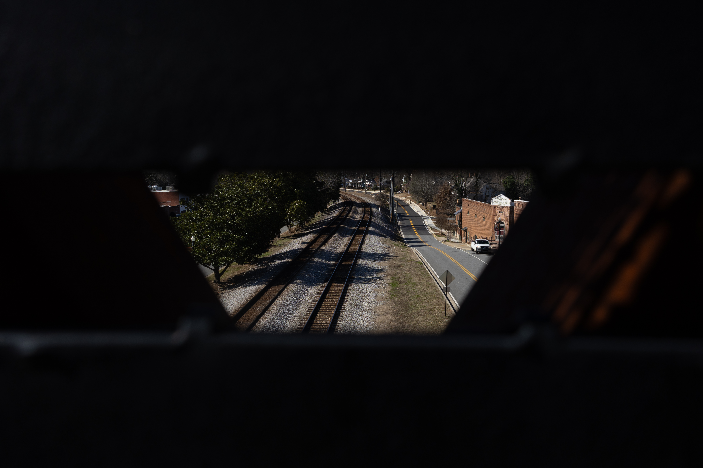
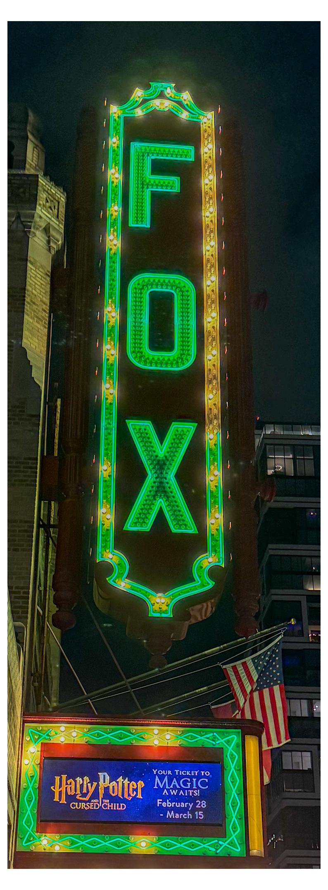
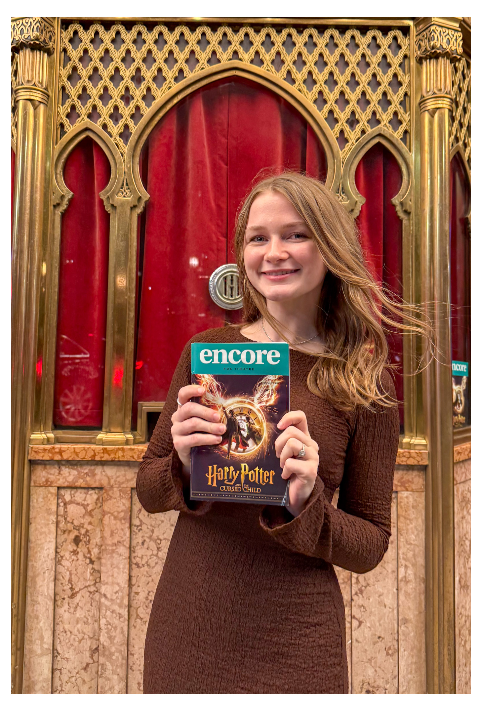

Photography
The still frame
Community, landscape, and documentary photography — shot in and around Cobb County, Georgia. Finding the story before the interview starts.

Acworth, GA · Frame within a frame

North Georgia Mountains · B&W

Fox Theatre, Atlanta · Night

Acworth · Street detail

Georgia Foothills · Golden hour

Kennesaw · Community & place

Fox Theatre · Event portrait